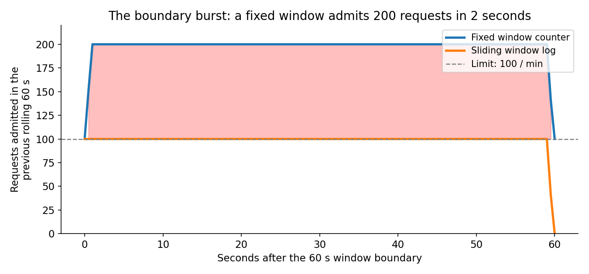
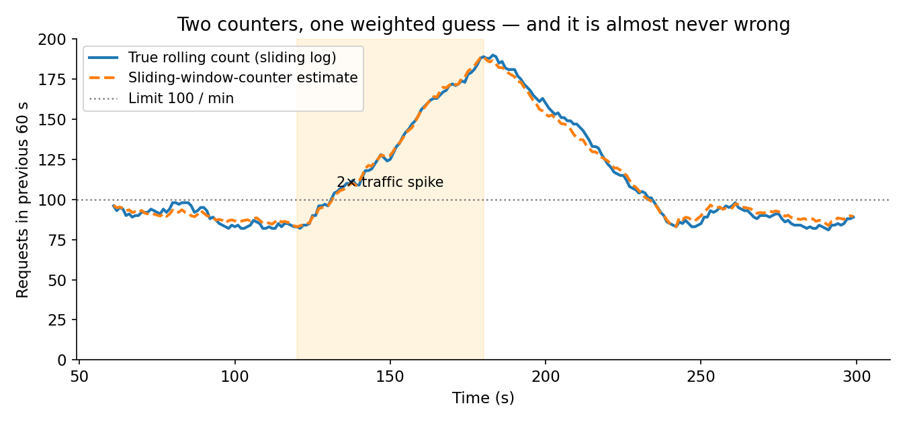
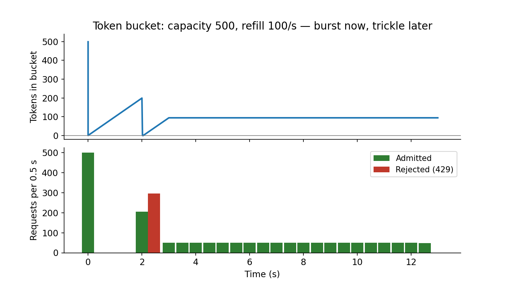
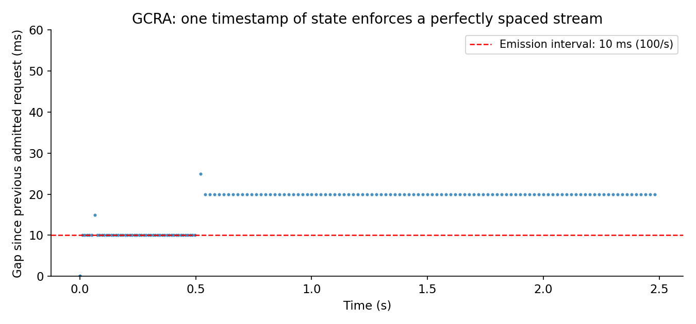

At 2:17 AM on a Tuesday, an e-commerce platform's API went down. The incident report later named the root cause: not a traffic spike, not a bad deploy — a rate limiter that had allowed a burst of requests through at exactly the boundary between two time windows, overwhelming the downstream services it was supposed to protect. The limiter was doing its job by every metric it kept. It was counting correctly. It was just counting the wrong way.
That is the whole subject of this post. A rate limiter is one of the simplest components in a distributed system — allow N requests per period, reject the rest with a 429 Too Many Requests — and it is also one of the easiest to get subtly wrong, because the algorithm you pick decides what "N per period" actually means. The wrong one lets twice your limit through in two seconds. The right one costs two integers per user and is wrong 0.003% of the time. The difference between them is not theory: it is a 2 AM page.
This is Part 6 of System Design, Plainly: one concept per post, evergreen, beginner-friendly, with the concrete numbers and the failure modes. Today: rate limiting — the five algorithms that count, where each one breaks, and how to pick one by what you are actually protecting.
The ELI5 version
Imagine a nightclub with a bouncer. The club holds 100 people, and the rule is "100 people per hour." There are two ways the bouncer can enforce that, and they behave very differently at midnight.
The clipboard bouncer counts entries per clock hour. At 11:59 PM he has let in 100 people; at 12:00 AM he tears up the page and starts a fresh count. So 100 people walk in at 11:59:59, and 100 more walk in at 12:00:01 — 200 people in two seconds, in a club that holds 100. The rule was followed exactly. The club is still over capacity. That is the fixed window counter.
The stopwatch bouncer keeps a list of when everyone entered and counts how many came in during the last 60 minutes, no matter what the clock says. At 12:00:01 he looks back and sees 100 entries in the last minute — full — so the next person waits. That is the sliding window log: exact, and it costs a list entry per person.
The token bouncer holds a bucket of 100 tokens and drops one in every 36 seconds. Every entrant takes a token. If the club has been quiet, the bucket fills up, and a burst of 100 can walk in at once — then the door trickles at one person per 36 seconds until tokens refill. That is the token bucket: it allows bursts on purpose, then enforces a steady average.
The turnstile bouncer lets exactly one person through every 36 seconds, no exceptions, no queue-jumping, no burst — if you arrive early you wait in line outside. That is the leaky bucket (and its precise cousin, GCRA): perfectly smooth output, at the cost of making people wait.
Same club, same rule, four different doors. The rest of this post is about which door to build, and what each one costs you in memory, accuracy, and 2 AM pages.
How it works: five ways to count
Every rate limiter answers one question per request: has this caller used up their allowance? The algorithms differ in what state they keep per caller, and that state is the whole tradeoff.
Fixed window counter. One counter per caller per clock window — say, per calendar minute. Increment on arrival, reject past the limit, reset to zero at the next minute. State: one integer. This is the simplest limiter you can build, and it is the one Figma rejected for exactly the reason in the opening story: at a window boundary, a client can fire N requests at 11:59:59 and N more at 12:00:01, admitting 2N in about one second. Our simulation makes it exact: with a 100-per-minute limit, an adversary sending 100 requests in the last second of one minute and 100 in the first second of the next gets 200 admitted in 2 seconds — and the worst rolling-60-second count the limiter ever sees is 200, double the limit it claims to enforce.

Sliding window log. Store a timestamp for every accepted request — in Redis, a sorted set — and count how many fall inside the last 60 seconds. Exact: no boundary exists to exploit, so no rolling window ever exceeds the limit. The cost is memory proportional to the limit itself. Figma calculated that 500 requests per day per user, over 10,000 users, needs roughly 20 MB of Redis just for timestamps — fine for a login endpoint at 5 attempts per hour, ruinous for a 10,000-requests-per-hour API quota. Use the log where the limit is small and precision is non-negotiable: logins, password resets, one-time codes.
Sliding window counter. Cloudflare's pragmatic answer keeps just two counters per caller — this minute and the previous one — and estimates the rolling count by assuming last minute's requests were spread evenly: estimate = previous × (60 − seconds into current) / 60 + current. Two integers of state, and the boundary burst mostly disappears. How mostly? Cloudflare measured it across 400 million requests from 270,000 sources: 0.003% of requests were incorrectly allowed or rejected, with an average 6% gap between the true and observed rate and zero false positives. Our own simulation — Poisson traffic at 90/min with a 2× spike — lands in the same regime: mean absolute error 2.44 requests, max 8, and only 1 of 239 allow/reject decisions flipped at a 100-per-minute limit. The assumption (last minute's traffic was evenly spread) is usually wrong, and it turns out to be wrong in acceptable ways.

Token bucket. A bucket holds up to C tokens and refills at R tokens per second. Each request takes one token (or several, for an expensive call); an empty bucket means a 429. A full bucket allows a burst of C, and the long-run rate can never exceed R. State: a token count and a timestamp — two numbers. This is the default for public APIs, and for a reason: bursts are normal client behavior. AWS API Gateway works this way — its throttling rate is the refill, its burst is the capacity — and Stripe runs token buckets in Redis, setting capacity = 5 × the per-second rate, so a user with a 100 req/s limit can burst to 500. Our simulation shows the shape: a 500-request burst at t=0 is admitted in full, a second 500-request burst two seconds later gets only 205 admitted (200 tokens refilled in 2 seconds, plus 5 more during the 50 ms the burst takes to arrive), and steady 100/s traffic afterwards passes 1,000 out of 1,000. The burst is a feature, not a bug — but it is a feature you have to size: your downstream must survive C requests arriving at once, because the limiter will let them through by design.

Leaky bucket and GCRA. Flip the token bucket around: requests pour into a queue and leak out at a constant rate; when the queue is full, new requests overflow and are rejected. NGINX's limit_req works this way — rate=1r/s burst=5 allows one request per second on average with bursts of at most 5, and nodelay serves the burst at once instead of spacing it out. The output is perfectly smooth, which is exactly what you want in front of a fragile downstream (an SMS vendor with a hard per-second cap, a payment rail), and the price is latency: queued requests wait. GCRA (Generic Cell Rate Algorithm, from ATM traffic shaping) is the leaky bucket formalized as virtual scheduling, and it is the most economical limiter in production: state is a single scalar, the Theoretical Arrival Time. On arrival at time t: allow if t >= TAT − tau, then set TAT = max(t, TAT) + T, where T is the emission interval. Implemented as Redis's CL.THROTTLE command in redis-cell, it benchmarks at roughly 0.1 ms per command. Our simulation, at 100/s with a 100 ms tolerance: a 20-request burst gets 11 through (the tolerance buys exactly tau/T + 1 burst slots), 200/s traffic gets 49 of 98 admitted (the cap is 100/s, so half is rejected), and 50/s traffic gets 99 of 100 through. One timestamp, O(1) work, zero burst beyond the tolerance.

| Algorithm | State per key | Bursts | Accuracy | Reach for it when… |
|---|---|---|---|---|
| Fixed window | 1 counter | Up to 2× the limit at the boundary | Exact inside a window, loose across it | The limit is not load-bearing |
| Sliding window log | 1 entry per request | None beyond the limit | Exact | Small limits, security endpoints |
| Sliding window counter | 2 counters | Smoothed, small error | ~0.003% wrong decisions (Cloudflare) | Edge scale, strict per-minute contracts |
| Token bucket | 2 numbers | Up to capacity, then the refill rate | Good | Public APIs — the default |
| Leaky bucket / GCRA | 1 queue / 1 timestamp | Smoothed, none beyond tolerance | Good / exact spacing | A fragile downstream needs a steady rate |
The distributed problem: one limiter, many servers
Everything above assumes one limiter. Real systems have dozens of servers behind a load balancer, and a per-server limiter is not a limiter at all — it is N limiters, each enforcing the full limit. Ten servers with a 100/min limit each is a 1,000/min limit in practice. The fix is a shared store, and the shared store has one hard requirement: atomicity.
The read-modify-write cycle — read the count, add one, compare, write back — is a race condition with a hole exactly one request wide, and at 10,000 requests per second that hole is a highway. The standard answer is a Lua script inside Redis: Redis executes scripts single-threaded, so the read, increment, compare, and expiry collapse into one atomic round trip. Stripe's production token-bucket Lua is about 26 lines. That is the whole distributed limiter at moderate scale: one Redis, one Lua script, one round trip per request.
At global scale the answer changes shape. A single Redis becomes a latency and availability problem of its own, so the edge takes over: Cloudflare's sliding window counter runs at the edge, close to the client, because two counters per key replicate cheaply and a 0.003% error is cheaper than a cross-region round trip on every request. The pattern that works in production is three tiers: edge (IP-based, high limits, catches DDoS and scrapers), API gateway (API-key-based, per-plan limits — free 60/min, pro 600/min), and per-endpoint (tight limits on the expensive operations: search 10/min, export 5/min). Each tier answers a different question, and no tier trusts the one above it.
Two more distributed facts worth knowing before the interview. First, clocks skew: a token bucket that refills from wall-clock time drifts when servers disagree about the time by tens of milliseconds, and a sliding window counter keyed to calendar minutes has the same problem — keep your windows short and your tolerance generous, or use a monotonic source. Second, a global limit is not a per-key limit: capping each user at 100/min does nothing when one tenant spawns 10,000 API keys. Per-key limits need a per-tenant limit above them, or the attacker just buys more keys.
Why it breaks: the four failure modes
1. The retry storm. A limiter rejects a request with a 429, and the client — helpfully, automatically — retries. Immediately. Ten thousand clients retrying at once turns a 100/s overload into a 1,000/s overload, and the limiter that was protecting the backend is now amplifying the load on it. The fix is on both sides of the wire: the server must send a Retry-After header (and the IETF is standardizing richer RateLimit and RateLimit-Policy headers — draft version 11, May 2026, still not an RFC), and the client must back off exponentially with jitter, never retry immediately, and cap total attempts. A 429 without Retry-After is a limiter that only did half its job. Stripe's advice, worth stealing verbatim: dark-launch new limits in log-only mode first, so you learn which clients will retry before the limit starts rejecting them.
2. Limiting the wrong thing. A per-second request count protects a fast endpoint and does nothing for a slow one: 100 requests per second to an endpoint that takes 10 ms each is 1 concurrent request; to an endpoint that takes 10 seconds each, it is 1,000 concurrent requests and a dead database. Stripe runs a second limiter for exactly this — a concurrency limiter capping in-flight requests per user — and when even that is not enough, it switches tools entirely: a load shedder looks at the whole system and drops low-priority work when resources saturate, while a rate limiter shapes the rate of one well-behaved actor. Different questions, different tools, same request path. Netflix's adaptive concurrency limits go one step further and learn the safe rate instead of being configured with one, Vegas-style: probe upward while latency stays flat, back off the moment it rises.
3. The limiter becomes the outage. A Redis-backed limiter that goes down takes one of two paths, and both are bad in different ways: fail-open (allow everything, lose protection exactly when traffic spikes) or fail-closed (reject everything, turn a Redis outage into a full outage). There is no universally right answer — fail-open for a public API whose worst case is extra load, fail-closed for a login endpoint whose worst case is a credential-stuffing attack — but it has to be a deliberate choice, made before the incident, not discovered during it. The same logic applies to the limiter's own latency: a 5 ms Lua script on every request is a 5 ms tax on your p99, paid by every user including the ones nowhere near their limit.
4. The limit nobody can find. A limit that is not communicated is a limit that gets discovered by accident, in production, by your best customer, at their busiest hour. Publish the limits in your docs, return the remaining quota in headers on every response, and make the 429 body say what the limit is, when it resets, and which tier the caller is on. GitHub does this well — 5,000 requests per hour for authenticated callers, with the reset time in the response — and the reason it works is that a client who can see the budget can manage it.
The interview angle
"Design a rate limiter" is one of the most common system-design questions, and the grading rubric is almost entirely about the failure modes above. The answer that passes:
- Start with the requirement, not the algorithm. Who is being limited — IP, API key, user, tenant? What is the limit protecting — the database, a paid downstream, abuse? A login endpoint and a search API want different limiters, and saying so is the point.
- Pick token bucket as the default and justify it in one sentence: two numbers of state, bursts allowed, steady average enforced. Then name the exception: sliding window counter when the contract is a strict per-minute number, sliding window log when the limit is small and must be exact, GCRA when the downstream needs a smooth rate.
- Draw the distributed version: shared Redis, Lua script for atomicity, TTL on keys so old counters clean themselves up. Then say what breaks at global scale (cross-region latency) and what replaces it (edge enforcement, approximate counters).
- Name the failure modes unprompted: the boundary burst (why not fixed window), the retry storm (429 +
Retry-After+ exponential backoff with jitter), the per-server trap (N servers × limit = N × limit), and fail-open vs fail-closed. - Close with the tiers: edge, gateway, per-endpoint — and the distinction between rate limiting one actor and load shedding the whole system.
The candidate who says "token bucket in Redis with a Lua script" and stops has given the Wikipedia answer. The candidate who then says "but the burst size is a promise to the downstream, the retries are the real outage risk, and here is what happens when Redis dies" has given the production answer.
Takeaways
- A rate limiter is a promise about the worst case, not the average. A fixed window counter promises 100/min and delivers 200 in two seconds. Check what your algorithm admits at the boundary, not in the middle of the window.
- Token bucket is the default for a reason: two numbers of state, bursts up to capacity, steady rate after. Stripe sizes capacity at 5× the rate; AWS API Gateway exposes the same two knobs.
- Two counters buy you almost-exact for almost-free: Cloudflare's sliding window counter is wrong on 0.003% of 400 million requests. When the contract is a strict per-minute number, that is the cheapest correct answer.
- GCRA is the most state-efficient limiter in production: one timestamp, ~0.1 ms per decision in Redis, zero burst beyond the tolerance you choose.
- The limiter is not the system. Per-key limits need per-tenant limits above them, concurrency limits beside them, and a load shedder for when the whole fleet is hot. And every 429 needs a
Retry-After, or your clients will retry their way into the outage you were trying to prevent.
Follow for the next part: Part 7 is Consistent Hashing — the ring that lets you add a server without moving 80% of your keys. If this series is useful, the follow button on the dev.to profile is where the next part lands first.
Honesty note: Cloudflare's 0.003% figure, Stripe's 5× capacity rule, Figma's 20 MB estimate, and the redis-cell 0.1 ms benchmark are the vendors' own published measurements, not independently replicated here; the boundary-burst, token-bucket, sliding-counter, and GCRA numbers are simulations in the companion notebook, run on this machine. The IETF RateLimit headers are draft version 11 (May 2026), not an RFC. No Meta content, per the standing exclusion.